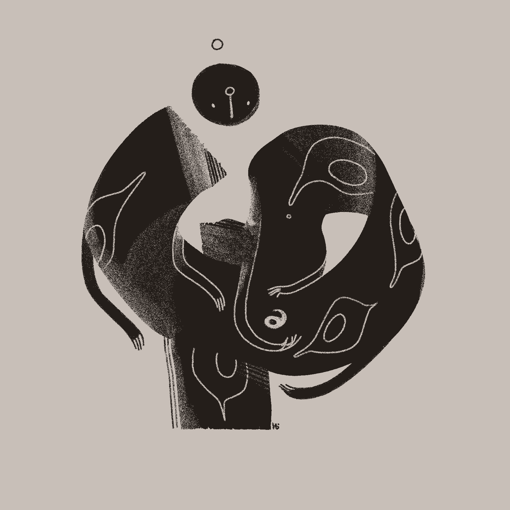
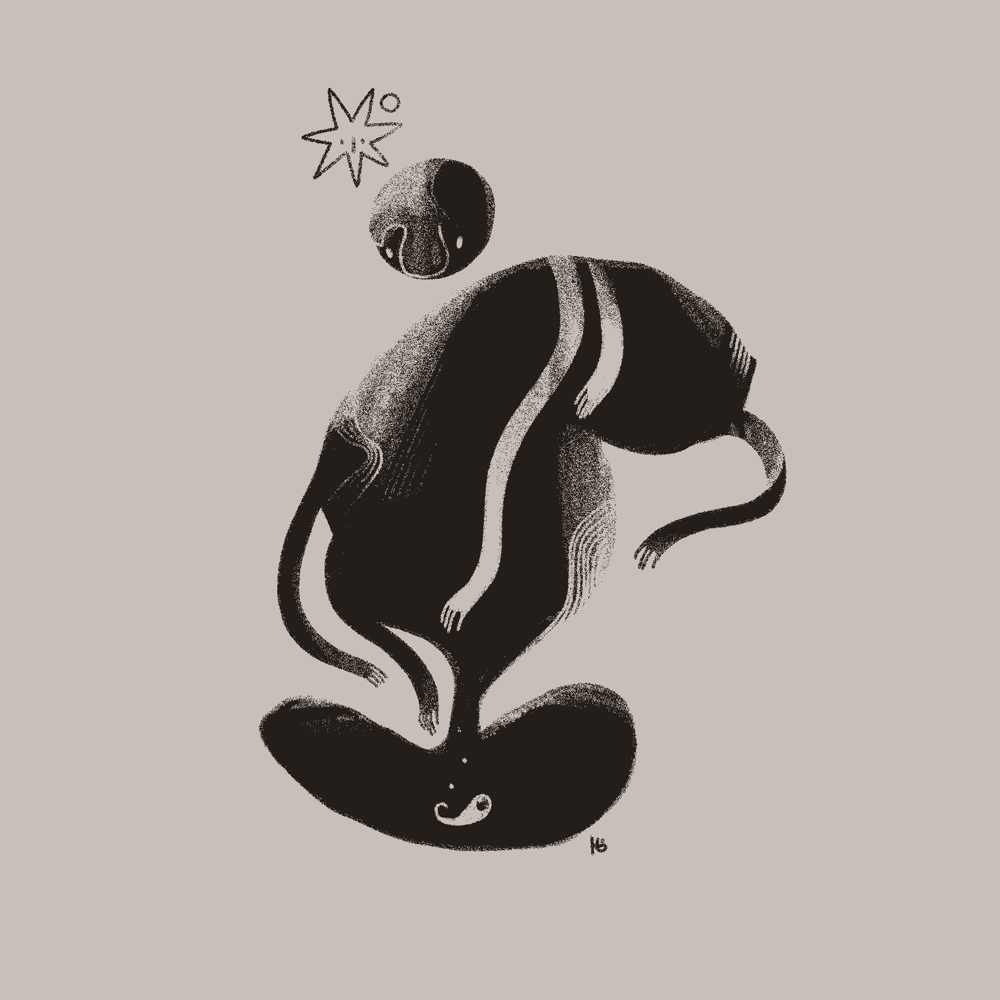

I'm also excited to announce a new set of cards for Magic: The Gathering! You can find them as part of the newest Secret Lair drop — Tome of the Astral Sorceress!
August found me hard at work editing the upcoming oracle deck, as well as wrapping up a few small traditional pieces. My experiments with casein will continue for a little while longer!
For weekly, in-depth updates of my art experiments, sketches, and inspirations — check out my Patreon!
2024 08 16
HOLY! 24 and Sigils 6-7
July saw the release of HOLY! 24, which marks a shift for the zine series. Since I'm making far fewer sketches and studies, the majority of this zine now documents my ink offerings. I hope you enjoy seeing them as they progress!
I also finished a couple new traditional pieces that use casein paint — Sigils 6 and 7 — and they're teaching me a lot about the medium!
I'm making a small adjustment to what's covered in these updates — covering what's been released in the previous month instead of up to whatever arbitrary Friday I'm able to write the catch-up. So for this July update, I'll recap what's been released in June!
Aside from the Magic: The Gathering card released in early June, much of the month was spent working on longer-term projects. I did, however, get to make a not-so-terrible comic for #makeaterriblecomicday2024:
I'm really pleased with how my traditional work is progressing, and I'm excited to see what the next month brings. Until then, I've got some client work to share. The first is for another Merveilles resident, Bad Diode.
The second announcement is that I got to make a card for the Magic: The Gathering Regional Championships! The card will be available to all participants, and I'm so honored to have a small part in it.
2024 05 10
HOLY! 23 & Sigils 1-4
There's no new Wormsong this month on account of me being ill most of April. That said, HOLY! 23 is up, and collects a ton of sketches from January through March.
While being away from the computer, I've gotten back into making work traditionally after a couple years off. There's something satisfying about making physical work, and it's given me a chance to lean into my rougher, more prehistoric influences. I've added a new section on my website to archive it, and here's the first four pieces:
The newest Wormsong entry, Āyen, marks the beginning of a little interactivity in the narrative. After each entry goes live, I'll post a choice on Patreon. All patrons can vote, and their choices will allow us to explore the Realms together!
I don't often make new music, but if you enjoy ambient or drone — you may enjoy my new track, Pōm.
Finally, new remix tracks for Josaleigh Pollett's album "In the Garden, by the Weeds" have dropped, and I'm happy to say that I got to remix my original album art for them. Go check them out!
2024 03 15
Wormsong and A Sigilist's Primer
The next entry for Wormsong is up — Dream. Expect another entry soon, and that's when things will really get going! We're still just at the beginning, so I'm making an effort to figure out what kind of realistic publishing schedule I might have. Expect about one entry a month, and hopefully as I wrap up some projects, I may be able to bump that to two.
I've also released the new Wormrōte zine, and am so excited to see a bunch of y'all using it already!
2024 02 23
HOLY! 22
The website updates are currently synced up with the email newsletter, so for now we're on a monthly schedule. Both are great ways to keep current with my work, but the email newsletter gets a few more sneak peeks!
It's mid-quarter, and that means a new issue of HOLY! is available! This one covers the last prints before my hiatus, and has a ton of visual development sketches for the Nōr.
I've also added a Tools & Methods page to the site recently. I figure it might give y'all some more insight into my work, and the list of tools may be useful.
2024 01 26
Goblin Week 2024
It snuck up on me, but I managed to draw my little goblins to celebrate the week! I love my children - they're like awful Pikmin. I've uploaded the whole parade as a print, as well as individual prints for each goblin.
There's something very funny about saying that I'll be continuing my hiatus from making prints, and then immediately making some. But it's Goblin Week, and I can never resist!
2024 01 19
Low & Slow
I've been on a hiatus from making prints since December, which has given me time to focus primarily on the Oracle Deck, Collector's Cards, and client commissions. It's also given me the mental space to do some worldbuilding for future Wormsong updates, as well as simply sitting and allowing new stuff to bubble up. That's what you can see with my sketches lately – a lot of bubbling.
The cauldron isn't boiling yet, but it's working its way there. My plan is to update this feed monthly alongside my email newsletter, and then weekly or bi-weekly when I start releasing new prints again. For the most detailed, cutting-edge updates, there's always Patreon.

2024 01 13
Formatting
Along with a new feed comes a new format! I'm going to continue providing updates here whether I make a new print or not, and since updates are always a little nicer with some art, most weeks I'll include a sketch. For those who want more, I usually post a handful of sketches along with oracle deck updates weekly over on my Patreon.
Finally, I have a new, commissioned variant of the font Basteleur throughout my website, so feel free to browse around and check out those letterforms!
Thanks to all my RSS friends for your feedback on the formatting, and never hesitate to lemme know if something looks awry!

2024 01 05
New Year, New Feed
It's a new year, and while I'm still taking a break from new prints, I thought I'd try making my update feed a little nicer, including putting a backlog of my update posts on their own page.
For my RSS folks: lemme know how things look on your end, and I appreciate your patience as I slowly troubleshoot any issues!
In the meanwhile, enjoy these offerings for Eris I've been making to start the day.